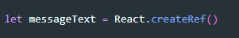
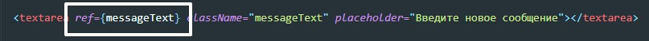
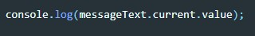
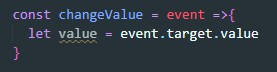

Что бы создать ссылку на элемент в VirtualDOM мы используем ref
Допустим у нас есть textarea значение которой нам надо получить. первое что мы делаем это создаем Ref-элемент
Теперь что бы привязать texarea к нашему Ref элементу мы у тега создаем атрибут ref и в качестве значения передаем туда Ref-элемент
Теперь что бы получить значение value мы обращаемся к свойству current. Это свойство содержит в себе экземпляр DOM элемента, у него мы можем вызвать любое свойство которое есть у Node элемента DOM, например value
Через event получаем target и получаем значение свойства value
